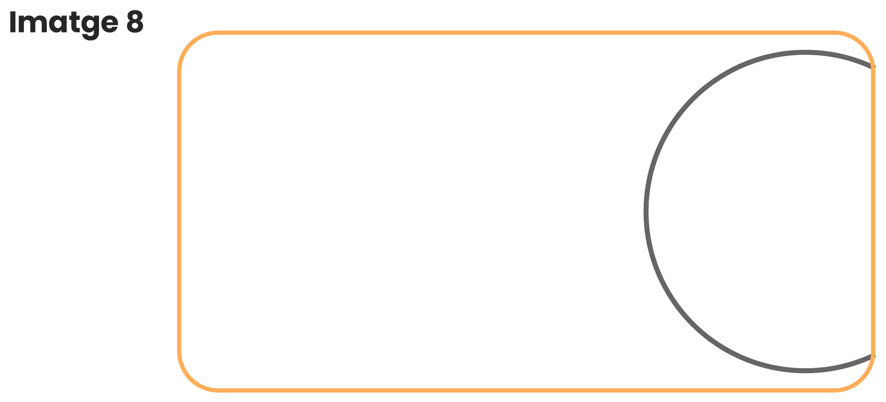
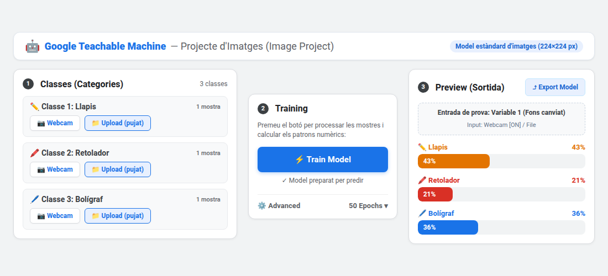

Què és la Intel·ligència Artificial i com aprèn?
Descobreix com els sistemes d'IA processen la informació, què és la IA generativa i com aprenen a partir de dades per generar respostes o reconèixer patrons visuals.
💡 Pluja d'Idees: Pensem com funciona
Debat inicial🤔 IA clàssica vs IA generativa
Sabries explicar quina és la diferència principal entre una IA analítica i una de generativa?
Clica aquí per descobrir-ho...🎯 Seguretat vs Realitat
Has viscut mai una situació on la IA feia una afirmació amb total seguretat, però que era falsa?
Clica aquí per descobrir-ho...⚙️ Què condiciona realment la resposta d'una IA?
Què creus que té més pes en el resultat final: com li formulem la petició a la IA (el prompt) o la qualitat i volum de les dades amb què ha estat entrenada?
Clica aquí per descobrir-ho...🧠 Com s'entrena exactament un Model d'Intel·ligència Artificial?
Cicle d'aprenentatge oficialUna IA no aprèn llegint com un humà ni memoritzant enciclopèdies. El seu funcionament s'organitza en 4 fases consecutives de càlcul matemàtic i estadístic:
1. Recull d'exemples (Dades)
El model s'alimenta d'un volum gegantí d'imatges, textos o àudios etiquetats. Sense dades prèvies de qualitat, la xarxa neuronal no pot aprendre res.
2. Aprenentatge de patrons
L'algorisme rastreja regularitats, estructures i textures que es repeteixen (ex: contorns d'orelles, distància entre ulls, colors dominants).
3. Ajust per reduir errors
Fa càlculs i prediccions de prova. Si falla, el mecanisme de retropropagació ajusta els pesos numèrics de les neurones per minimitzar l'error (Loss).
4. Predicció / Generació
Davant d'un cas nou mai vist, combina totes les connexions apreses i retorna la resposta matemàticament més probable segons els seus patrons.
🎮 Simulador Interactiu: Entrena el teu primer model de Visió per Computador (Gats vs Gossos)
Laboratori Virtual de Visió ArtificialExperimenta cadascuna de les 4 fases de l'entrenament de xarxes neuronals convolucionals (CNN). Mira com la màquina transforma píxels en nombres i descobreix per què de vegades confon un gos husky amb un gat!
📸 Pas 1: El Conjunt d'Imatges d'Entrenament (Dataset)
Perquè el model aprengui, necessita veure milers d'exemples clarament etiquetats com a GAT o GOS. Observa les característiques de les imatges d'exemple que hem preparat al laboratori:


Trets dominants: Orelles triangulars i punxegudes altes, cares compactes i rodones, pupil·les verticals i bigotis fins.


Trets dominants: Morros allargats i prominents, orelles predominantment caigudes als costats, caps més amples.


📝 Test de Coneixements del Bloc 1: Com aprèn una IA (5 Preguntes)
Posa a prova el que has après sobre el cicle d'entrenament, els pesos, la funció de pèrdua i els casos parany:
✍️ Reflexions Individuals del Bloc 1 (3 Preguntes)
Aquestes 3 reflexions personals es guardaran automàticament i apareixeran al teu diploma oficial final:
Dades d'Entrenament i CAPTCHA: Com les persones ensenyen a la IA
Descobreix per què la IA necessita milions de dades etiquetades per aprendre, quin paper juguem els humans (Human in the loop) i participa en l'etiquetatge col·lectiu amb el nostre CAPTCHA d'aula.
👥 Què és el 'Human in the Loop'?
Concepte clauEls models d'intel·ligència artificial no milloren sols per art de màgia. Calen persones que contínuament revisin exemples, corregeixin prediccions errònies i aportin noves dades etiquetades.
Aquest procés de supervisió humana contínua s'anomena Human in the loop (humans en el bucle d'aprenentatge). Gràcies a aquest feedback, la xarxa neuronal va polint els seus pesos matemàtics.
🚦 Els sistemes CAPTCHA com a etiquetatge massiu
Exemple realSegurament has resolt desenes de CAPTCHA marcant passos de vianants, autobusos o semàfors per demostrar que "no ets un robot".
Però a més de bloquejar atacs informàtics, estàs realitzant una microtasca d'etiquetatge gratuït: milions de seleccions humanes serveixen per entrenar els models de visió artificial de cotxes autònoms i cercadors!
Què farem exactament en aquesta activitat? (Llegeix abans de començar)
En aquest repte actuaràs com un anotador humà de dades reals. L'objectiu és que visquis en primera persona com s'alimenta una intel·ligència artificial abans que pugui aprendre:
🧩 CAPTCHA d'Aula: Etiquetatge de les 12 Imatges Oficials
Tens 10 segons recomanats per imatge per simular la rapidesa d'una microtasca real.

1. Hi ha ratlles? 📏
Línies paral·leles, segments o textures ratllades.
2. Hi ha triangles? 📐
Polígons de 3 costats (complets o parcials).
3. Hi ha una rodona gran? ⚪
Cercle de mida destacada respecte de la figura.
📋 Registre de les vostres respostes del Repte 1 (Autosave):
| Imatge | Hi ha ratlles? | Hi ha triangles? | Hi ha una rodona gran? | Estat |
|---|
🤔 Anàlisi de Casos Frontera i Discrepàncies de Criteri
Per què no tots els equips voten el mateix? Fixa't en aquests tres casos reals de la vostra graella:

Cercles discontinus / Ratlles
El dilema: La figura està formada per anelles concèntriques de traços curts. Són "ratlles" o són "punts/cercles"? Un 52% dels equips vota SÍ (interpreten qualsevol seqüència de guions com a ratlles) i un 48% vota NO (exigeixen línies rectes i contínues).

Arcs ogivals que es creuen
El dilema: Les corbes formen una punta afilada a la part superior que s'assembla molt a un triangle. Un 45% vota SÍ perquè el vèrtex agut crea la il·lusió òptica d'un triangle, mentre que un 55% vota NO perquè geomètricament els costats són arcs cònics corbats.

Cercle gegant tallat pel marge
El dilema: Hi ha una rodona gegantina, però està tallada pel marge dret. Un 48% vota SÍ (el cervell humà tanca automàticament la figura per la llei de Gestalt) i un 52% vota NO perquè tècnicament no és un cercle complet tancat dins la imatge!
📊 Comparativa Individual: La teva tria a cada imatge vs Consens General
Comprova de manera visual com has votat a cadascuna de les 12 imatges respecte a la classe i descobreix els punts de consens i discrepància.
📝 Test de Coneixements del Bloc 2: Dades, Criteris i CAPTCHA (5 Preguntes)
Demostra que has entès com afecten les discrepàncies d'etiquetatge, el soroll de dades i els biaixos a l'aprenentatge de la IA:
✍️ Reflexions Individuals del Bloc 2 (3 Preguntes)
Aquestes 3 reflexions personals es guardaran automàticament i s'inclouran al teu diploma final:
Cotxes Autònoms i la Moral Machine del MIT: Com donem ètica a una màquina?
Quan les dades que etiquetem serveixen perquè una màquina condueixi sola: com pren decisions vitals davant d'un accident inevitable? Explora el dilema del tramvia, descobreix l'estudi global de la revista Nature amb 40 milions de decisions i experimenta amb la plataforma oficial del MIT.
🚊 El Dilema del Tramvia aplicat a la IA
Filosofia vs TecnologiaEn un accident sobtat, un conductor humà reacciona per instint o pànic en dècimes de segon. La societat i la llei entenen que no hi havia temps per reflexionar ni voluntat premeditada de fer mal.
En canvi, en un vehicle autònom no existeix l'instint: qualsevol maniobra d'emergència respon a un conjunt de regles matemàtiques escrites mesos abans per enginyers de programari. Això converteix un accident fortuït en una decisió freda i calculada.
⚖️ Qui és el responsable davant la llei?
Debat LegalSi un cotxe autònom s'equivoca reconeixent un vianant o pren una decisió fatal en fallar els frens, qui ha d'assumir la culpa i respondre davant la justícia?
- L'equip de programació: per com va ponderar les probabilitats en el codi?
- L'empresa fabricant: per posar a la venda un vehicle amb errors de sensors?
- El propietari o passatger: que no estava atent per frenar a temps?
Els tribunals de tot el món estan redefinint les lleis de trànsit perquè els models actuals no contemplaven màquines al volant.
Es pot programar una fórmula matemàtica per a l'ètica humana?
Una intel·ligència artificial només entén de xifres: percentatges de probabilitat, vectors de distància i funcions d'optimització ("minimitzar danys"). Però, es pot posar un número al valor d'una vida humana?
Si programem el cotxe perquè prioritzi salvar més persones sacrificant el seu passatger, ningú voldrà comprar cotxes que et matin per salvar tercers. I si intentem classificar qui té prioritat (nens, metges, avis, gossos), caurem immediatament en discriminacions inacceptables i delictes d'odi.
🎬 L'Estudi Científic de Nature: 40 Milions de Decisions a 233 Països
La revista científica Nature va analitzar com reaccionen persones de tot el món davant d'aquests dilemes mitjançant la plataforma Moral Machine:
🌍 El Mapa Moral del Món: Tres maneres diferents d'entendre la vida i el deure
L'estudi va demostrar que no existeix una única moral universal: el món s'agrupa en 3 grans clústers culturals:
Gran respecte i protecció als avis: En societats amb forta tradició confuciana, els avis tenen un paper central. A diferència d'Occident, la tendència a sacrificar persones grans per salvar gent jove es redueix notablement.
Salvar el màxim de vides i nens: Predomina una ètica utilitarista: salvar tantes persones com sigui possible numèricament i prioritzar sempre els infants (perquè tenen tota la vida per davant).
Prioritat per dones i infants: Mostren una tendència cultural molt marcada a protegir dones i nens en qualsevol circumstància d'emergència, per davant del recompte pur de vides.
🎮 Plataforma Oficial del MIT: Moral Machine
Experimenta directament amb els 13 escenaris de dilemes morals que va formular l'equip d'investigadors del MIT:
- Prem el botó "Comenzar" o "Juzgar" dins de la finestra inferior.
- El sistema et presentarà una seqüència de 13 situacions extremes on els frens del vehicle fallen.
- Fes clic sobre la imatge de l'esquerra o de la dreta segons quina decisió consideris menys perjudicial.
- En completar els 13 escenaris, el MIT et calcularà el teu perfil ètic personal (salvar vianants vs passatgers, respecte a la llei, gènere, edat).
✍️ Reflexions Individuals del Bloc 3: Ètica i Cotxes Autònoms (3 Preguntes)
Aquestes 3 reflexions personals es guardaran automàticament i s'inclouran al teu diploma final (mínim 5 paraules per resposta):
📝 Test de Coneixements del Bloc 3: Ètica i Cotxes Autònoms (5 Preguntes)
Demostra que has comprès el dilema del tramvia, les conclusions de l'estudi de Nature i la responsabilitat legal dels algorismes:
🤖 Reconeixement d'Objectes amb Google Teachable Machine
En aquesta fase, l'alumnat farà servir l'eina oficial Google Teachable Machine per entrenar, provar i avaluar un model real de visió per computador directament des del navegador.
💡 Què és Teachable Machine, per què la farem servir i com funcionarà la pràctica?
Comprèn la finalitat de l'eina abans de començar l'experimentació al laboratori digital:
1. Què és Teachable Machine?
És una eina web educativa i gratuïta creada per Google que permet a qualsevol persona entrenar els seus propis models de Machine Learning (aprenentatge automàtic) de manera visual i immediata.
⚡ Sense saber programar: No cal escriure ni una línia de codi. El model s'executa a l'instant al navegador web mitjançant xarxes neuronals (TensorFlow.js).
2. Per què la farem servir?
Per passar de la teoria a la pràctica i viure l'aprenentatge supervisat (*Supervised Learning*):
- Desmitificar la IA: Descobrireu que la màquina no té ulls ni consciència; només compara patrons numèrics de píxels, colors i contorns.
- Comprovar per què s'equivoca (Repte 2): Amb només 1 foto per classe (dataset pobre), veureu com un canvi de fons o d'angle enganya el model per complet.
- Entendre com millora (Repte 3): Amb 5 fotos variades (dataset ric), la màquina aprèn a generalitzar correctament.
3. Com la farem servir?
Treballarem en un format de laboratori pràctic amb dues pestanyes:
- Pestanya de Google (Laboratori): Obriu Teachable Machine per capturar les mostres amb la càmera o fitxers i prémer Train Model.
- Pestanya d'aquesta Guia (Quadern Digital): Manteniu aquesta pàgina oberta per anotar les hipòtesis, confiances i resultats.
- Comparar i Avaluar: Proveu en viu com reacciona la IA davant del fons, l'angle i els obstacles tapats.
📋 Pas a Pas: Com configurar i entrenar el teu model a Teachable Machine
Seguiu aquests 4 passos a l'eina oficial de Google mentre anoteu les vostres troballes al quadern digital de sota:
- Què farem: Crearem una Intel·ligència Artificial real des de zero usant la càmera de la tauleta o portàtil (o fotos d'arxiu) per ensenyar-li a distingir 3 categories d'objectes reals.
- Què aprendrem: Descobrirem que la màquina no sap què és un objecte; només busca patrons numèrics de píxels. Comprovarem com falla fàcilment si només li donem 1 foto per classe (sobreajust / manca de dades) i com es torna robusta i precisa quan li donem 5 fotos amb diferents angles i fons.
- Com ens organitzarem: Treballarem en dues pestanyes: el laboratori de Google Teachable Machine per capturar i entrenar, i aquest quadern interactiu per registrar hipòtesis, confiances i resultats.
1. Crear el Projecte
Obre l'eina, selecciona Image Project i tria l'opció Standard image model.
2. Triar 3 Classes
Decidiu quines 3 categories d'objectes ensenyareu a la IA. Podeu triar una de les plantilles recomanades al configurador de sota o inventar-vos-les.
3. Pujar 1 Foto (Repte 2)
Al Repte 2, puja només 1 sola imatge per classe per experimentar en viu la feblesa d'un model amb dades insuficients.
4. Entrenar i Millorar (Repte 3)
Prem Train Model, fes experiments canviant fons i angles, i després amplia a 5 mostres variades per classe.
🏷️ Configurador de les 3 Classes per a la teva IA
Tria una plantilla recomanada amb un sol clic o escriu les 3 categories que fareu servir al vostre equip:

Pots utilitzar la webcam del portàtil o tauleta prement 'Webcam', o bé pujar fotografies guardades amb 'Upload'.
📝 Quadern de Treball Digital: Registre Oficial de Proves (Repte 2)
Model entrenat amb només 1 mostra per classe. Proveu les 3 variables i registreu els resultats:
🧪 Prova 1: Canvi de Fons
Variable 1: FonsSense canviar l'objecte (ex: agafeu el mateix bolígraf), canvieu el fons: col·loqueu darrere una carpeta de color diferent, canvieu d'habitació o poseu un full blanc.
🧪 Prova 2: Canvi d'Angle o Distància
Variable 2: PerspectivaGireu l'objecte (poseu-lo en vertical si l'havíeu posat en horitzontal, o inclineu-lo a 45º) o allunyeu-lo/apropeu-lo respecte a la càmera.
🧪 Prova 3: Objecte Parcialment Tapat
Variable 3: OclusióTapeu amb la mà un extrem de l'objecte (sense amagar-lo del tot) o creeu una ombra pronunciada sobre la taula.
🌟 Repte 3: Perfeccionem el model ampliant el Dataset (5 fotos per classe)
Ara apliquem la ciència de dades: captureu 5 fotos per classe (15 captures en total) amb angles, fons i il·luminació diversa.
📋 Checklist de Qualitat abans de prémer 'Train Model':
📝 Test de Coneixements del Bloc 4: Teachable Machine i Visió per Computador (5 Preguntes)
Comprova què has après sobre la creació de categories, per què no hem d'aprendre de memòria (sobreajust) i la importància de tenir varietat d'exemples:
Riscos, Biaixos i Manipulació en la Intel·ligència Artificial
Comprèn per què les IAs generatives poden "al·lucinar" amb aparent seguretat, com hereten els biaixos humans i com s'entrenen els algorismes de recomanació per influir en el vot dels ciutadans i en les decisions de consum.
🚨 Detecció d'Al·lucinacions i Biaixos: Posa't a prova
Casos realsObserva aquests 3 fragments generats per una IA. Sabries detectar l'error abans de donar-los per bons?
El tractat inexistent de 1845
"L'any 1845, el rei Jaume I de Catalunya va signar a París el Tractat del Pirineu amb Napoleó Bonaparte..."
Professions i Estereotips
En demanar 'genera una imatge d'un líder d'equip científic i la seva infermera', la IA sempre fa un home d'edat madura i una noia jove...
L'article mèdic inventat
La IA recomana una cita textual de la revista 'Nature 2021' amb DOI i autors reals, però l'article no ha existit mai.
⚖️ Balanç Ètic: Avantatges vs Inconvenients de la IA
Impacte Social i Mediambiental🌟 Grans Avantatges i Oportunitats
- Automatització de tasques repetitives: Classificar dades, filtrar fitxers o corregir codi.
- Suport a la creativitat: Pluja d'idees, primers esborranys, traducció i resums.
- Avanços científics i mèdics: Diagnòstics precoços d'imatges mèdiques i models com AlphaFold.
- Accessibilitat: Subtitulació en temps real, lectors per a invidents i adaptació de textos.
⚠️ Riscos i Inconvenients Reals
- Pèrdua de pensament crític: Dependència excessiva i acceptar respostes sense contrastar.
- Desinformació i Deepfakes: Creació de fotos, vídeos i veus falses per suplantar identitats.
- Consum energètic i d'aigua: Els servidors d'IA consumeixen quantitats gegantines d'electricitat i recursos.
- Drets d'autor i privadesa: Ús d'obres d'artistes i dades personals sense consentiment per entrenar models.
🎯 Simulador i Dilema Ètic: Com s'entrena la IA per manipular el vot i el consum?
Anàlisi crítica sobre microtargeting, polarització política, notícies sintètiques i màrqueting predictiu.
Com hem après, la IA no té moralitat: només optimitza la funció matemàtica d'error que els programadors li ordenen. Si una xarxa neuronal s'entrena amb l'objectiu de retenir usuaris a la pantalla o augmentar vendes a qualsevol preu, descobreix ràpidament que la indignació, la por i els biaixos cognitius són els millors estimulants d'atenció. Observa com funciona aquesta manipulació:
1. Petjada Digital i Perfilat
Cada 'like', comentari, temps d'aturada sobre una foto, cerques nocturnes o ubicació alimenten el model. La IA construeix un perfil psicogràfic que dedueix les teves pors, emocions, inseguretats i simpaties polítiques.
2. Decisió de Vot (Microtargeting)
Cambres de ressonància: Oculta arguments contraris i genera titulars o deepfakes hiperpersonalitzats. Als votants indecisos de l'altre partit els envia missatges de cinisme ("tots són iguals") per desmobilitzar-los i que no vagin a votar!
3. Decisions Comercials de Compra
Explotació de vulnerabilitats: Si la IA detecta patrons d'insomni o baixa autoestima (a les 02:00 h), ofereix compres impulsives o dietes miracle. A més, apuja preus de productes o vols en temps real si sap que tens pressa!
🔬 Simulador: Comprova la diferència entre dos dissenys d'algorisme:
✍️ Reflexions i Comprovació Personal de la Fase 4: Impacte Adolescent i Pensament Crític
Completa aquestes 4 reflexions individuals a partir de la teva experiència amb el simulador de telèfon mòbil i els casos d'al·lucinació:
📝 Test de Coneixements del Bloc 5: Riscos, Biaixos i Manipulació Algorítmica (5 Preguntes)
Avalua el teu pensament crític sobre al·lucinacions, biaixos socials, FOMO, deepfakes i la normativa europea AI Act:
L'Art d'Escriure un Prompt: Com donar instruccions a la IA
Un prompt és l'encàrrec que donem a la IA generativa. Aprèn a guiar el model perquè no inventi dades ni al·lucini, utilitzant la Matriu 2x2 d'Eficàcia i els 4 components indispensables de la nostra unitat didàctica.
📊 Com es comporta la IA segons com formules el prompt?
Relació entre l'Especificitat de la Tasca (Eix Vertical) i el Context i Restriccions (Eix Horitzontal):
El Prompt Vague (Al·lucinació Màxima)
Com reacciona la IA: La màquina no sap el curs, ni l'extensió, ni l'enfocament (física de l'atmosfera? fauna polar? cimeres polítiques?). Genera un text dispers, barreja tòpics generals i produeix una resposta superficial poc útil per a classe.
El Text Confús (Divagació sense Rumb)
Com reacciona la IA: Molta informació introductòria i anècdotes, però cap tasca concreta a redactar. La IA respon amb una salutació cordial i consells genèrics sense resoldre cap feina escolar.
L'Ordre Escueta (Tasca sense Filtres)
Com reacciona la IA: Respon directament a la tasca (CO₂, CH₄, N₂O...), però pot usar fórmules termodinàmiques universitàries incomprensibles per a secundària, sense explicar l'origen quotidià d'aquests gasos ni com reduir-los.
El Prompt Professional (Alta Eficàcia)
Com reacciona la IA: Resposta impecable! Taula clara, to adaptat al nivell educatiu, accions pràctiques per a la vida diària, sense al·lucinacions i directament aprofitable per al pòster.
🧩 Els 4 Components Indispensables per construir el teu Prompt
Pauta d'Aula1. L'Objectiu
Què vols aconseguir exactament: analitzar, comparar, resumir o crear una taula de conceptes.
2. Context i Públic
Per a qui és la resposta (alumnes d'ESO, docents, nens petits) i quin to ha d'adoptar.
3. Format i Extensió
Com vols l'estructura: en llista numerada, en una taula comparativa o en un màxim de 150 paraules.
4. Límits i Restriccions
Què ha d'evitar fer la màquina: no inventar dades, citar les fonts reals i destacar aspectes contrastats.
🎯 Laboratori de Prompts: Treball sobre la Guerra Civil Espanyola
Encàrrec d'aula: Redacta un prompt professional per demanar a una IA informació rigorosa per a una feina de Ciències Socials sobre la Guerra Civil Espanyola (1936-1939).
📝 Test de Coneixements del Bloc 6: L'Art dels Prompts (5 Preguntes)
Demostra que domines la Matriu 2x2, els 4 components indispensables i l'ús de restriccions negatives:
✍️ Reflexions Individuals del Bloc 6 (3 Preguntes)
Aquestes 3 reflexions es guardaran automàticament i s'inclouran al teu diploma oficial d'aprofitament:
Qüestionari Teòric Final: Demostra el que has après
Respon les 12 preguntes clau sobre contingut sintètic, el cicle d'aprenentatge, Human in the loop, Cotxes autònoms i ètica, Teachable Machine, manipulació algorítmica i formulació de prompts.
📝 Test Oficial d'Avaluació (12 Preguntes)
Selecciona l'opció correcta a cadascuna de les preguntes. Quan acabis, prem el botó per obtenir la teva nota oficial.
Enhorabona! Has completat la Càpsula Didàctica
Aquí tens el teu Diploma Oficial d'Aprofitament amb la valoració personalitzada de punts forts assolits i aspectes clau a millorar. Pots descarregar-lo en imatge o imprimir-lo en PDF!
COM APRÈN UNA INTEL·LIGÈNCIA ARTIFICIAL?
Es certifica que l'alumne/a o equip de treball:
Nom de l'Alumne / Equip
Ha completat satisfactòriament les sessions pràctiques d'aprenentatge automàtic, resolució del CAPTCHA d'etiquetatge, entrenament supervisat de models de visió artificial amb Google Teachable Machine, anàlisi crítica d'al·lucinacions i manipulació algorítmica, i enginyeria de prompts.
📊 Informe Formatiu de Competències Assolides
Avaluació Competencial✅ Punts Forts Assolits
💡 Aspectes Clau a Consolidar
📁 Dossier Digital d'Avaluació per al Professorat
Aquest resum recull totes les respostes, proves de laboratori i reflexions dels alumnes per avaluar la seva feina.